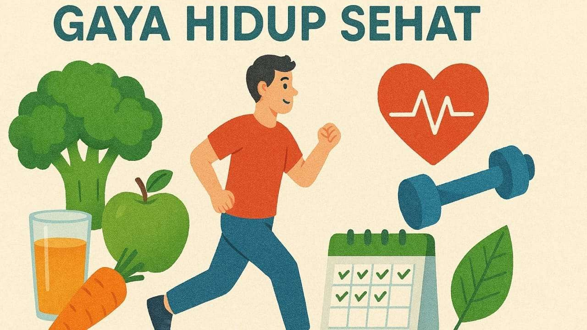
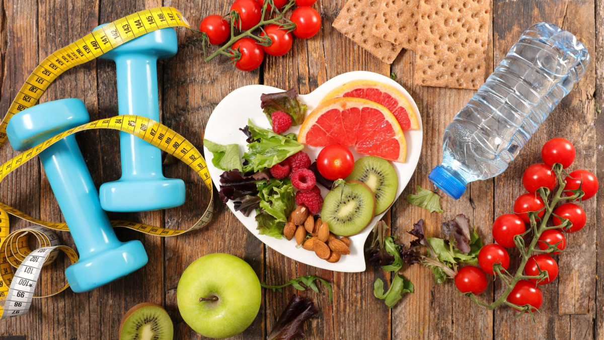

Dalam analisis ini, saya membagi penerapan Pola Hidup Sehat menjadi tiga subbab, yaitu:
Subbab ini membahas pentingnya mengonsumsi makanan yang seimbang, seperti karbohidrat, protein, lemak sehat, vitamin, dan mineral. Selain itu, dijelaskan juga kebiasaan makan yang baik, seperti tidak melewatkan sarapan, mengurangi makanan cepat saji, serta memperbanyak konsumsi buah dan sayur. Pola makan sehat membantu menjaga energi, meningkatkan daya tahan tubuh, dan mencegah berbagai penyakit.
Subbab ini menjelaskan pentingnya melakukan aktivitas fisik secara rutin, seperti olahraga ringan hingga sedang (jalan kaki, bersepeda, atau berenang). Aktivitas fisik membantu menjaga kebugaran tubuh, memperkuat otot dan tulang, serta meningkatkan kesehatan jantung. Selain itu, olahraga juga berperan dalam menjaga kesehatan mental dengan mengurangi stres.
Subbab ini membahas pentingnya tidur yang cukup dan berkualitas, serta menjaga kesehatan mental. Kurang tidur dapat berdampak buruk pada konsentrasi, emosi, dan kesehatan tubuh secara keseluruhan. Selain itu, menjaga kesehatan mental dapat dilakukan dengan mengelola stres, menjaga hubungan sosial, dan melakukan kegiatan yang menyenangkan.